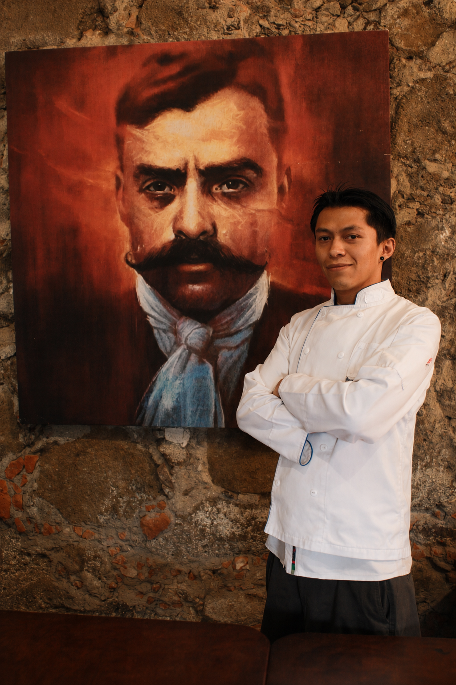
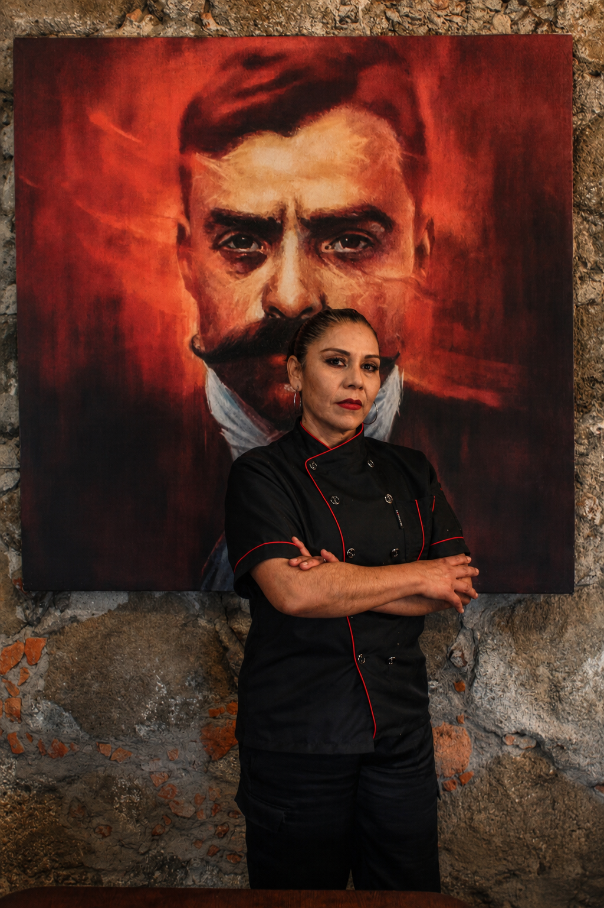

CONOCE A
Nuestro Equipo
Detrás de cada platillo existe pasión, creatividad y tradición mexicana. Nuestro equipo culinario transforma ingredientes frescos en experiencias inolvidables.
El corazón de nuestra cocina
Cada chef aporta personalidad, tradición y pasión para ofrecer sabores auténticos que hacen única la experiencia en La Querendona.

Chef Misael
Especialista en cocina mexicana tradicional y parrilla. Su pasión es conservar los sabores auténticos que representan la esencia de La Querendona.

Chef Edith
Encargada de crear experiencias cálidas y modernas combinando recetas caseras con una presentación elegante y auténtica.